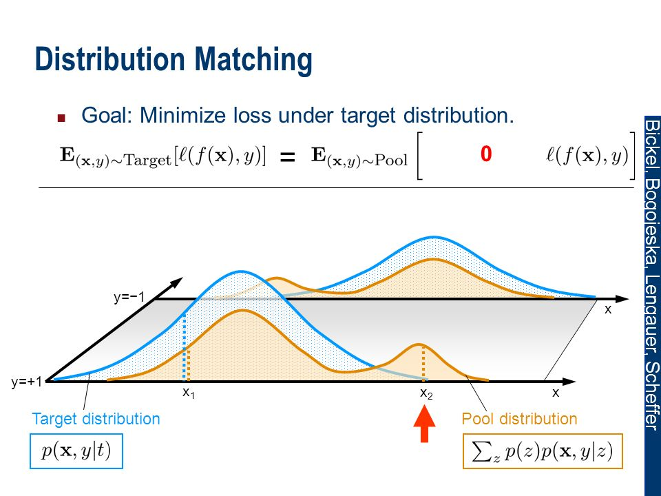
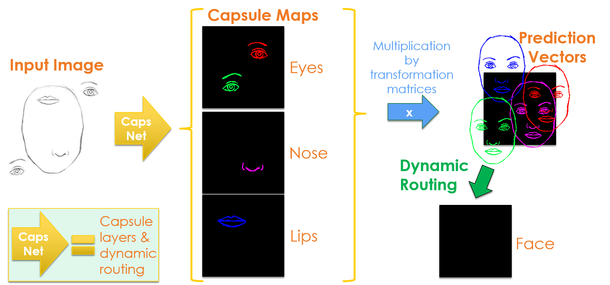
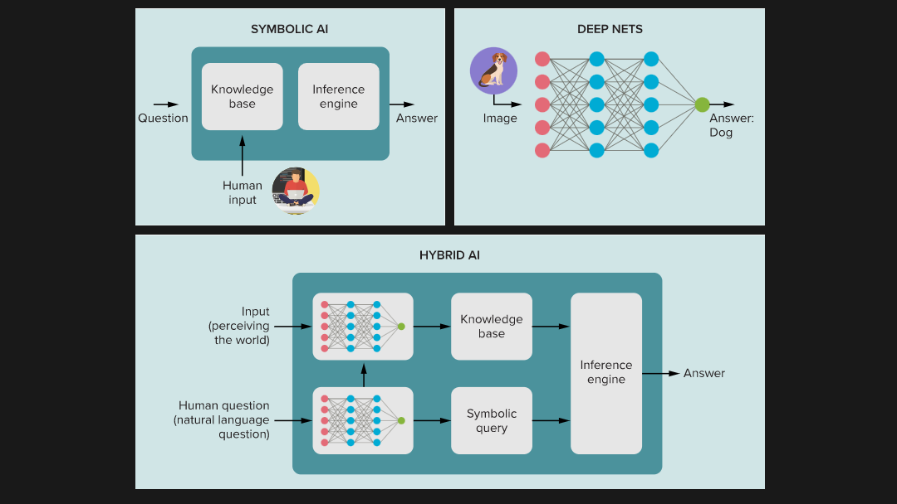
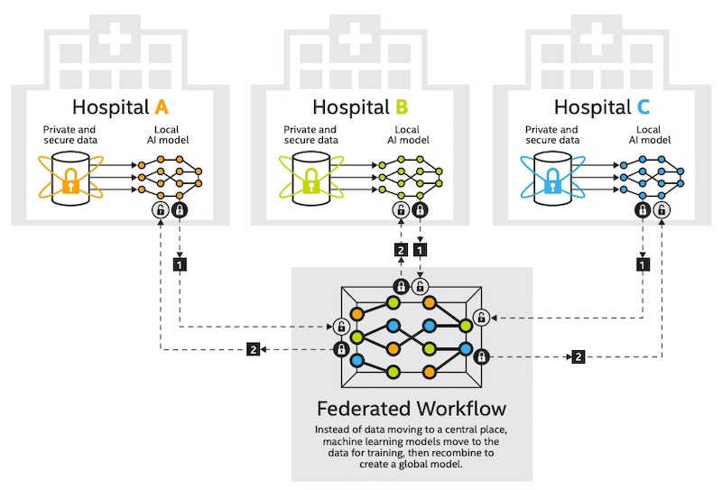

About myself
Agenda
INTRODUCTION
CURRENT ML TECHNOLOGIES
EMERGING AI AND ML TRENDS
A&I PROJECTS AND TOOLS
WHERE TO START?
QUESTIONS
Introduction
History
Artificial Intelligence
Speech Recognition
Computer Vision
Cognitive Computing
Reasoning
Deep Learning
Optimisation
General AI
Data Analytics
Expert Systems
Motion and Manipulation
Fuzzy Logic
Knowledge Graph
Planning
Robotics

NLP
Machine Learning
Computer Vision
Deep Learning
Optimisation
Machine Learning
Machine Learning
Deep Learning
Optimisation
Computer Vision
WHat is machine learning?
Computer Vision
Deep Learning
Optimisation
Machine Learning
What is Machine Learning?
Machine Learning
Deep Learning
Computer Vision
Optimisation
What is Deep Learning?
Machine Learning
Deep Learning
Computer Vision
Optimisation
What is Computer Vision?
Machine Learning
Deep Learning
Computer Vision
Optimisation
What is Optimisation?
Machine Learning
Deep Learning
Computer Vision
Optimisation
Why is it important?
✔ Accurate predictions
✔ Predict future outcome or failures
✔ More efficient way of doing things
✔ Accurate intepretations of results
✔ Reduce data or problem dimensions
OVERALL ML PROCESS
What is in Machine Learning domain?
Learning Algorithm
Models, Classifiers and Clustering
Types of algorithm
Link to Colab notebookTraining Algorithm:
Model Algorithm:
Types of algorithm
Link to Colab notebookTraining Algorithm:
Model Algorithm:
Types of algorithm
Link to Colab notebookTraining Algorithm:
Model Algorithm:
What about deep learning?
Types of algorithm
Link to Colab notebookTraining Algorithm:
Model Algorithm:
Next, let's get into more advanced stuff...
CURRENT ML TECHNOLOGIES
Data
Where can i get data?
Where can i get data?
Internet
IoT
Testing
Simulation
Where can i get data?
Internet
IoT
Testing
Simulation

Where can i get data?
Internet
IoT
Testing
Simulation
Where can i get data?
Internet
IoT
Testing
Simulation
What if data is not available...
- Build data using Monte-Carlo simulation
What if data is not available...
- Build data using Monte-Carlo simulation
- Use digital twin
What if data is not available...
- Build data using Monte-Carlo simulation
- Use digital twin
- Get from a surrogate model
What if data is not available...
Monte-Carlo Simulation
- Virtual fleet can be generated artificially using Monte-Carlo Simulation
- Combining together vehicle simulation model and component damage model, we can generate a realistic vehicle fleet
- This method makes it possible to generate data for any scenarios
- Please watch our webinar presented by Dr Peter Fussey about using this method for developing prognostics algorithm: Webinar link
Density Matching
- The generated artificial fleet needs to have correct distributions to an actual fleet
- The density estimation method is needed to estimate the Monte-Carlo Simulation distribution parameters
- An optimiser is needed for more complex density matching
- Density matching is closely related to Statistical Inference

Digital Twin

Digital Twin
Deep Learning
Deep Neural Architecture
Convolutional Neural Network
- The first few layers are the core building block of CNN
- Feature detector or filter move across the receptive fields of the image looking for features
- Then, there are pooling layers that perform dimensionality reduction which helps to reduce the complexity
- The last layer is the fully-connected layer that performs classification

Learning process
Deep Reinforcement Learning
Deep Reinforcement Learning
- A popular method in Artificial Intelligence which trains a machine learning to perform a task
- Self-learn system that requires less supervision and is model free
- It reacts to the environment and makes changes to the system actions to maximize its rewards
- It has policies or mapping of its states and actions
- This method mimics a human learning process and get rewarded for successful tasks
Deep Reinforcement Learning
Deep Reinforcement Learning
Deep Reinforcement Learning
EMERGING ML TECHNOLOGIES
EMERGING ML TECHNOLOGIES
Intelligence Amplification
Augmented Intelligence
“Augmented intelligence is a design pattern for a human-centered partnership model of people and artificial intelligence (AI) working together to enhance cognitive performance, including learning, decision making and new experiences.” -Gartner Glossary-
Augmented Intelligence
Augmented Intelligence
Augmented Intelligence
Knowledge graph
Knowledge graph
Knowledge graph

Knowledge graph
Knowledge graph
- Graph-structured data model
- Interlink description of concepts, entities, relationships and events
- Also known as semantic network
- Used for logical reasoning, explainable recommendations and complex analysis
- It is not new, and has been around since 1980s
- Becoming more popular now with integration with ML and AI
Knowledge graph
Knowledge graph
Knowledge graph
Applications
Applications
Applications

Knowledge graph

Model Explainability
Model Explainability
- EXplainable Artificial Intelligence (XAI) is a new research field
- To improve model explainability
- Make models easier to be interpreted and understand by humans
- Often called the third wave of AI
Model Explainability
Is it important?
- ✔ Make models more transparent
- ✔ Improve our trust in AI decisions
Model Explainability
Model Explainability
Model Explainability
Models
Capsule Networks
Capsule Networks
Capsule Networks
Capsule Networks
Capsule Networks
CNN
Capsule Network
Capsule Networks
The Transformer
How it all started?
RNN
RNN
LSTM
RNN
LSTM
Attention Mechanism
The transformer
The Transformer
- Developed by Vaswani's team at Google Brain
- Based on a paper called "Attention is All You Need"
- Completely removed the recurrent aspects of the model
- Using self-attention models
- Mimics human brain to focus on relevant things and ignore the less important details
The Transformer
The Transformer
The Transformer
Decision engines
Decision engines
Decision engines
Human Augmented Decision engines

Applications
Applications
Applications
Composite AI
Composite AI
Composite AI
- A new approach combining several AI techniques
- Multi-model to improve decision making outcome
- Suitable for business problems
Hybrid Models
Hybrid Models
Symbolic AI
Deep Nets
Hybrid Models
Symbolic AI
Deep Nets
Hybrid Models
Symbolic AI
- Human-readable representations
- Related to logic-programming, expert systems and rule-based system
- Abandoned in 1990s due to technical limits
Hybrid Models
Symbolic AI
Deep Nets
Hybrid Models
Hybrid Models
Hybrid Models

Hybrid Models
Explainable Boosting Machine
Explainable Boosting Machine
- Explainable Boosting Machine (EBM) is a tree-based, cyclic gradient boosting Generalized Additive Model with automatic interaction detection
- EBMs are often as accurate as state-of-the-art blackbox models while remaining completely interpretable
- Although EBMs are often slower to train than other modern algorithms, EBMs are extremely compact and fast at prediction time.
- It's competitor such as XGBoost is not interpretable and require post-hoc analysis.
Explainable Boosting Machine
Learning process
Self-supervised Learning
Self-supervised Learning
Unsupervised Learning
Supervised Learning
Self-supervised Learning
Unsupervised Learning
Semi-supervised Learning
Supervised Learning
Self-supervised Learning
Unsupervised Learning
Semi-supervised Learning
Supervised Learning
Self-supervised Learning
Different Types of Learning
Different Types of Learning
Different Types of Learning
Different Types of Learning
Self-supervised Learning
- Aims at creating a data-efficient artificial intelligent system
- Self-supervised learning does not focus on clustering and grouping
- An autonomous form of supervised learning
- Use only unlabelled data to find underlying data structure
Federated Learning
Federated Learning
Federated Learning
- A global model distributed to the clients to enhance the model
- Only new weights are returned to the federated server
- Returned weights are incorporated into global model
Federated Learning
Is privacy an issue?
- Private user data are only processed locally
- Only new weights are shared
- Model weights are values that is hard to deduce and is just model parameters
- It will not only help to eliminate data security and privacy issues but customised services for every end-user
- Used by King's College London and American College of Radiology for medical imaging and radiology

Learning Using Privileged Information: SVM+
What is SVM?
Support Vector Machine (SVM)
- SVM or Support Vector Machine
- A classifier and it can be a linear or non-linear classifier
- Performs classification by finding the hyperplane that maximises the margin between classes

Learning using Privileged Information
What is LUPI?
- Teacher-student based learning
- Humans are effective at learning with the help of a teacher
- Teacher share comments, explanations and examples to facilitate learning process
- LUPI uses additional information in training phase (data only available in training phase)
Learning using Privileged Information
SVM+
- SVM+ is an SVM that uses additional information to learn
- It estimates the slack variables and use transfer learning for new models
- Benefits:
- Faster convergence
- Fewer training examples needed
Deployment and production
Hyperautomation
“ Orchestration of multiple technologies, tools and platforms to automate as many business and IT processes as possible. ”
Hyperautomation
Hyperautomation
Ford and AVL developed a data driven solution which integrates data technologies and calibration engineering knowledge into a structured data management and analytics platform for hybrid powertrain calibration.
TinyML
TinyML
- A type of machine learning that fits into tiny hardware
- Where machine learning meets edge computing
- Reduced and optimised full stack ML that can run in small devices
- Makes it possible to get inference without sending data to cloud
- Applications includes voice commands, image processing, detection, monitoring and many more
- Next AI revolution
TinyML Applications
TinyML Applications

- A reinforcement learning agent is combined with a PID controller for airpath control
- The DQN controller is also able to compensate if the PID controller has errors due to software faults
Where to start?
Start from here:
- Run locally and it is free
- Support various ML packages and algorithms
For production deployment:
- Proper ML deployment and lifecycle
- Run on the cloud or computer cluster

For quick scripting and testing:
- Run online free without installing on local machine
- Access to codes and databases (Kaggle)
- Limited usage
- Data Privacy can be an issue
Free Online Notebooks

A&I Projects and Tools
Digital Portal